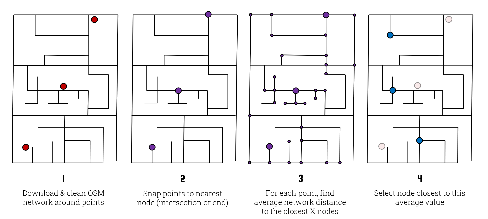

Street Masking
What is Street Masking¶
Street masking automatically downloads OpenStreetMap data and uses it to geographically mask your secret points. It provides some of the advantages of population-based masks without requiring the user to hunt down any additional data. It works by first downloading the road network, snapping each secret point to the nearest node on the network (e.g. an intersection or dead end), and then calculating the average network-distance between that node and a pool of the closest n nodes. Note that n is randomly determined for each point from a specified range between min_depth and max_depth. This average distance is used as the target displacement distance. Finally, it selects a node from the pool whose network-distance from the starting node is closest to the target displacement distance.
You can read more about street masking in this peer reviewed article.
 (Note: this diagram is slightly dated as street masking now includes a randomization element. Specifically, depth values are now provided as a range within which a value is selected at random for each point. This makes it more difficult for an attacker to re-identify any given masked point.)
Example Usage¶
To street mask a GeoDataFrame containing secret points with a search-depth range of 20-30 nodes into the street network:
from maskmypy import Street
streetmask = Street(
secret=my_secret_gdf, # Name of the secret GeoDataFrame.
min_depth=20, # The minimum depth into the street network that will be traversed.
max_depth=30, # The maximum depth into the street network that will be traversed.
seed=12957134581, # A seed value to ensure reproducible results.
address=address_points_gdf) # Layer of address points used in the next line to calculate k-anonymity.
streetmask.run(calculate_k=true) # Execute the mask and add a column describing the k-anonymity of each point.
masked = streetmask.mask
Reference¶
Bases: Mask
Constructs a street masking class that (when run) anonymizes points by randomly displacing them based on the surrounding street network using OpenStreetMap.
Does not support containment.
Parameters:
-
secret
(
GeoDataFrame) –Secret layer of points that require anonymization. All other GeoDataFrame inputs must match the CRS of the secret point layer.
-
min_depth
(
int, optional) –The minimum number of nodes to traverse along the street network. Default:
18 -
max_depth
(
int, optional) –The maximum number of nodes to traverse along the street network. Default:
20 -
max_length
(
int, float, optional) –When initially locating each point on the street network, MaskMyPy verifies that the nearest node is actually connected to the network and has neighbors that are no more than
max_lengthaway (in meters). If not, the next closest point is selected and checked the same way. This acts as a sanity check to prevent extremely large masking distances, such as might be caused by highways. Default:500. -
padding
(
int, float, optional) –Context layers (e.g. population, address, container, street network) are automatically cropped to the extent of the secret layer, plus some amount of padding to reduce edge effects. By default, padding is set to one fifth the x or y extent, whichever is larger. This parameter allows you to instead specify an exact amount of padding to be added. Recommended if the extent of the secret layer is either very small or very large. Units should match that of the secret layer's CRS.
-
seed
(
int, optional) –Used to seed the random number generator so that masks are reproducible. In other words, given a certain seed, MaskMyPy will always mask data the exact same way. If left unspecified, a seed is randomly selected using
SystemRandom -
population
(
GeoDataFrame, optional) –A polygon layer with a column describing population count.
-
pop_col
(
str, optional) –The name of the population count column in the population polygon layer. Default:
pop. -
address
(
GeoDataFrame, optional) –A layer containing address points.